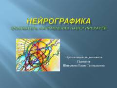

НNeyrografika — ongsiz qo'rquv va bloklarni bartaraf etish hamda hayotni o'zgartirish uchun tasviriy usul.
Mazkur qo'llanmada neyrografika usuli, uning kelib chiqishi va ongsiz qatlamlar bilan ishlash jarayoni tushuntirilgan. Muallif ushbu tasviriy amaliyot orqali qo'rquvlar, cheklovlar va bloklarni yengish, shuningdek, istaklarni amalga oshirish yo'llarini ko'rsatib beradi. Kitob shaxsiy o'sish va psixologik muvozanatga erishishni istaganlar uchun mo'ljallangan.